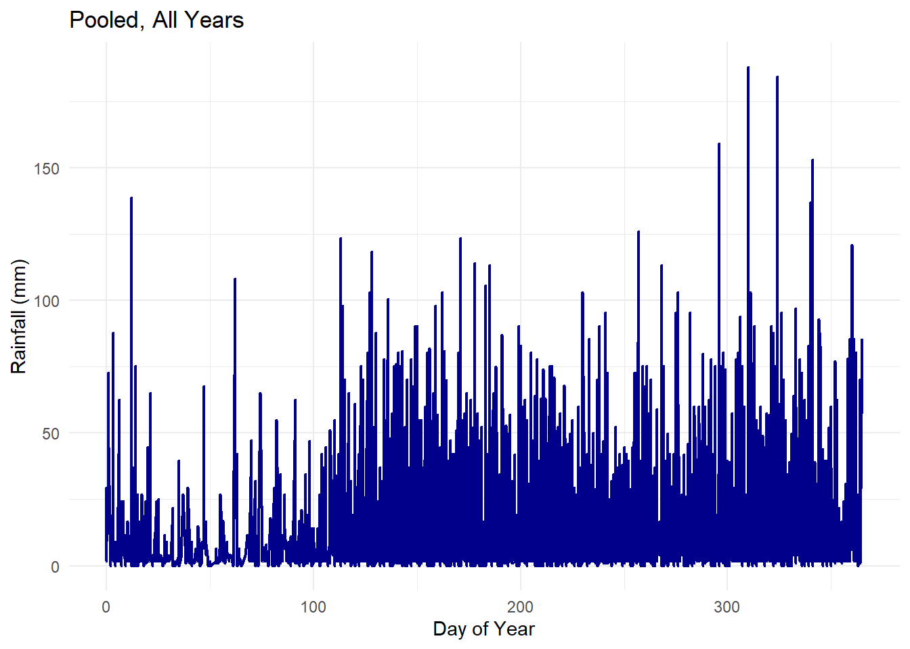

source("class_r_scripts/load_packages.r")28 Tutorial: GAMs
28.1 Introduction
In this tutorial, we introduce how to model different datasets using Generalized Additive Models (GAMs). Later on, we will address how to add a random effect into these models (turning these into Generalized Additive Mixed Models, or GAMMs).
28.2 Example #1: Building a basic GAM
For this example, we will revisit a familiar dataset: a population of Lepusantilocapra pufferi (puffer jackalope) starting in the mid-1970s. You will need the following file (simply click to save):
As a reminder, the data include the following variables:
site: where the individuals were sampledabund: number of individuals detected at each locationdens: density of individuals (per square meter) at each sampling locationmean_depth: mean depth, in meters of the sampling locationyear: year of the studyperiod: 1=before and 2= after introduction of Pelicanus pufferivorus (puffer-jackalope pelican)x_km: longitude (decimal degrees) of sampling locationy_km: latitude (decimal degrees) of sampling locationswept_area: size in square meters of the sampling location (effort)
Though we examined the relationship between total Lepusantilocapra pufferi abundance and mean depth for each time period (before/after introduction of puffer-jackalope pelicans), we will now improve our modeling process. Here, we will simplify our model and use density (dens) as our response variable (to account for variation in area searched, rather than using an offset).
28.3 Set up workspace
Then read in the dataset.
pufferi <- read.csv("class_exercise_data/lepusantilocapra_pufferi_abundance.csv")28.4 A linear model of jackalope density
mod_gamma <- glmmTMB(dens ~
mean_depth + year * period, family=Gamma(link="log"),
data = pufferi)Warning in (function (start, objective, gradient = NULL, hessian = NULL, :
NA/NaN function evaluationWhat happened here do you think? Look at the dens variable. Seriously, stop and think about the original dataset and remember that dens is a metric derived by abund divided by swept_area. The values for abund is very small relative to the large swept_area square meters.
Let us try to solve this problem by converting the swept_area values into hectares (10000 square meters) and see if the linear model converges:
# convert swept_area to hectares
pufferi$dens2 <- pufferi$abund / (pufferi$swept_area/10000)
mod_gamma2<- glmmTMB(dens2 ~
mean_depth + year * period, family=Gamma(link="log"),
data = pufferi)So, the fact that the model onverged and did not throw other warning messages is promising. So, what happened? The original model was having issues (and throwing an NaN error) because one of the Gamma parameters could not easily be estimated due to the very small positive values in the original dens variable.
Let us go ahead and simulate the residuals of this model using the DHARMa package (our usual approach).
res <- simulateResiduals(mod_gamma2)
plot(res)
We have solved our main issue! But can this model be improved?
28.5 Fitting a GAM
First, let’s convert our glmmTMB model to a model formula that can be used in the mgcv::gam function. Actually, there is nothing really to convert, as it looks identical.
mod_gam <- gam(dens2 ~
mean_depth + year * period, family=Gamma(link="log"),
data = pufferi)For this one also, simulate the residuals of this model using the DHARMa package.
res <- simulateResiduals(mod_gam)Registered S3 methods overwritten by 'mgcViz':
method from
+.gg GGally
simulate.gam gratiaplot(res)
The basic residual structure also looks very good. Of course, we would also need to examine residual structure as functions of the other covariates.
To convince you that it’s doing the same thing, check out the summary of mod_gam and mod_gamma2.
summary(mod_gamma2) Family: Gamma ( log )
Formula: dens2 ~ mean_depth + year * period
Data: pufferi
AIC BIC logLik -2*log(L) df.resid
1241.0 1258.9 -614.5 1229.0 140
Dispersion estimate for Gamma family (sigma^2): 0.521
Conditional model:
Estimate Std. Error z value Pr(>|z|)
(Intercept) -5.560e+02 3.237e+02 -1.717 0.0859 .
mean_depth -1.038e-03 5.168e-05 -20.091 <2e-16 ***
year 2.823e-01 1.621e-01 1.741 0.0817 .
period 4.348e+02 2.954e+02 1.472 0.1410
year:period -2.181e-01 1.477e-01 -1.477 0.1397
---
Signif. codes: 0 '***' 0.001 '**' 0.01 '*' 0.05 '.' 0.1 ' ' 1summary(mod_gam)
Family: Gamma
Link function: log
Formula:
dens2 ~ mean_depth + year * period
Parametric coefficients:
Estimate Std. Error t value Pr(>|t|)
(Intercept) -5.560e+02 3.317e+02 -1.676 0.0960 .
mean_depth -1.038e-03 4.955e-05 -20.952 <2e-16 ***
year 2.823e-01 1.660e-01 1.700 0.0913 .
period 4.348e+02 3.109e+02 1.398 0.1642
year:period -2.181e-01 1.554e-01 -1.403 0.1627
---
Signif. codes: 0 '***' 0.001 '**' 0.01 '*' 0.05 '.' 0.1 ' ' 1
R-sq.(adj) = 0.37 Deviance explained = 65.9%
GCV = 0.60621 Scale est. = 0.50838 n = 146Very close indeed. But let us now see if we can improve this model (even in a small way). We are going to add a smoother, s() with a cubic spline basis function, to our one continuous variable, mean_depth and then refit the model.
TipWhat is the default basis function used by the
s() smoother?
As noted in the ?mgcv::smooth.terms help documentation, the default basis function is a thin plate regression splines (bs="tp"). Technically, they do not have knots, but they control the points of “wiggle” in another way.
mod_gam<- gam(dens2 ~
s(mean_depth, bs="cr", k=10) + year * period, family=Gamma(link="log"),
data = pufferi)As noted in the ?mgcv::smooth.terms help documentation, “cubic spline basis defined by a modest sized set of knots spread evenly through the covariate values”.
Summarize this model!
summary(mod_gam)
Family: Gamma
Link function: log
Formula:
dens2 ~ s(mean_depth, bs = "cr", k = 10) + year * period
Parametric coefficients:
Estimate Std. Error t value Pr(>|t|)
(Intercept) -530.8409 336.4092 -1.578 0.117
year 0.2686 0.1684 1.595 0.113
period 394.8998 315.5240 1.252 0.213
year:period -0.1983 0.1577 -1.257 0.211
Approximate significance of smooth terms:
edf Ref.df F p-value
s(mean_depth) 1.891 2.345 182.5 <2e-16 ***
---
Signif. codes: 0 '***' 0.001 '**' 0.01 '*' 0.05 '.' 0.1 ' ' 1
R-sq.(adj) = 0.408 Deviance explained = 66.7%
GCV = 0.59929 Scale est. = 0.5208 n = 146This output looks a bit different. You now have two components to the model output: one for the parametric (linear) coefficient and one for the semiparametric (smoothed, or non-linear terms). The former (parametric coefficients) is identical to the output of the linear models that you have seen previously in GLM and GLMMs. The bottom section (“Approximate signficance of smooth terms”) shows the strength of the smoothed terms (and interactions, if applicable). We will discuss how to interpret the semiparametric effects in class.
For the sake of a quick comparison (i.e. not what you really should do for a manuscript), we can examine the AICs of these models.
AIC(mod_gamma2, mod_gam) df AIC
mod_gamma2 6.000000 1241.018
mod_gam 6.891014 1239.017As a reminder, the model with the lowest AIC has less information loss and is therefore a better-supported model. Inclusion of the non-linear term has improved our model fit. Not dramatically so, but you get the point.
28.5.1 What about those knots (k) and the risk of overfitting?
As you recall from the introductory material, smoothed terms base their “smoothiness” or “curviness” on the number of segments (knots) that the line is split into. The more knots means that the relationship is more curvy. The various GAM functions and packages use slightly different methods for finding a smooth that does not overfit the data. But let’s look at this ourselves in the next example!
28.6 Example #2: Rainfall at a long term jackalope study site
To do this, let us look at some weather data! This is another dataset you will need to access (simply click to save):
This dataset contains daily rainfall data across 83 years on Barro Colorado Island, the home of the endemic liana jackalope (Lepusantilocapra cryptophiloliana). We want to understand recent temporal patterns (among and within years) in daily rainfall. So, let us read in the data and then, because we are interested in recent years only–reduce its size a bit (by limiting to the year range of 2008-2011). We will also go ahead and ensure the dates are in the right format and use these to calculate a a derived variable for data difference (relative to the first date in new, filtered dataset).
rain <- read_csv("class_exercise_data/rainfall_daily.csv")Rows: 16258 Columns: 5
── Column specification ────────────────────────────────────────────────────────
Delimiter: ","
chr (1): station
dbl (3): rainfall_mm, year, yearday
date (1): date
ℹ Use `spec()` to retrieve the full column specification for this data.
ℹ Specify the column types or set `show_col_types = FALSE` to quiet this message.rain <- rain %>% filter(year > 1990)
rain <- rain %>%
mutate(
date2 = ymd(date), # Convert date to Date format using lubridate's ymd
yearday2 = yearday + 1, # Increment yearday by 1
days_diff = as.numeric(date2 - min(date2, na.rm = TRUE)) # Diff from min date
)Let us plot these data!
# Plot rainfall with shading for certain year ranges
rain_sorted <- rain %>% arrange(yearday2)
# Line plot for pooled data across all years
ggplot(rain_sorted, aes(x = yearday, y = rainfall_mm)) +
geom_line(color = "darkblue", linewidth = 0.8) +
labs(title = "Pooled, All Years", x = "Day of Year", y = "Rainfall (mm)") +
theme_minimal()
The first thing we notice is that there is a distinct dry season in the first part of the calendar year. Then, after about 100 days or so (corresponding to sometime in April), the rainy season begins.
28.7 A simple univariate GAM
We then move into modeling rainfall. First, we need to understand the boundaries of our response variable:
range(rain$rainfall_mm)[1] 0 188hist(rain$rainfall_mm, 50)
The distribution includes 0 values and has a long right tail. A Gamma will work very well here, but Gamma distributions cannot include 0 values. So, we can do a tricky little adjustment by adding a small value to all 0 values:
rain <- rain %>%
mutate(rainfall_mm = if_else(rainfall_mm == 0,
0.00001,
rainfall_mm))This is trick is commonly used to allow data to be modeled using a Gamma distribution (as well as for other distributions like the beta distribution). You need need to ensure that you are not adding much noise to the system. You have a couple of options that you should think carefully about:
- You could add the very small value to all datapoints and then shift the final estimates downward by that amount.
- You could add that amount to all zero values (a good approach if there are only a few zero values).
Now that our data meet the requirements of the Gamma distributions, we can fit Gamma GAMs with rainfall_mm as the response variable and a smoother of yearday. We will specify a Gamma error distribution with a log link function. But let us not stop there. Let us run several versions of these GAMs each with a different number of knots (3-20).
mod0 <- gam(rainfall_mm ~ s(yearday, bs="cc"), family=Gamma(link="log"), data=rain)
mod3 <- gam(rainfall_mm ~ s(yearday, k=3, bs="cc"), family=Gamma(link="log"), data=rain)Warning in smooth.construct.cc.smooth.spec(object, dk$data, dk$knots): basis dimension, k, increased to minimum possiblemod4 <- gam(rainfall_mm ~ s(yearday, k=4, bs="cc"), family=Gamma(link="log"), data=rain)
mod5 <- gam(rainfall_mm ~ s(yearday, k=5, bs="cc"), family=Gamma(link="log"), data=rain)
mod6 <- gam(rainfall_mm ~ s(yearday, k=6, bs="cc"), family=Gamma(link="log"), data=rain)
mod8 <- gam(rainfall_mm ~ s(yearday, k=8, bs="cc"), family=Gamma(link="log"), data=rain)
mod10 <- gam(rainfall_mm ~ s(yearday, k=10, bs="cc"), family=Gamma(link="log"), data=rain)
mod15 <- gam(rainfall_mm ~ s(yearday, k=15, bs="cc"), family=Gamma(link="log"), data=rain)
mod20 <- gam(rainfall_mm ~ s(yearday, k=20, bs="cc"), family=Gamma(link="log"), data=rain)Then, we can compare using AIC.
aic_list <- AIC(mod3, mod4, mod5, mod6, mod8, mod10, mod15, mod20)
# sorted by ascending AIC
aic_list %>%
arrange(AIC) df AIC
mod8 7.414299 24478.39
mod10 7.747918 24481.01
mod15 8.097447 24482.88
mod20 8.231357 24483.50
mod6 5.886517 24494.01
mod5 4.289481 24538.82
mod3 3.578037 24547.87
mod4 3.578037 24547.87This works the same as before. The model with the lowest AIC (mod8) has the least information loss. But, first, we can examine what each of these smoothed relationships looks like. Here, we will use just base R and ggplot2, as other approaches either include additional packages (e.g. gratia or patchwork) or require many more lines of code. Base R for the win, I say.
par(mfrow=c(3, 3), mar=c(2,2,2,2))
plot(mod3, shade=T)
plot(mod4, shade=T)
plot(mod5, shade=T)
plot(mod6, shade=T)
plot(mod8, shade=T)
plot(mod10, shade=T)
plot(mod15, shade=T)
plot(mod20, shade=T)
Remember that the y-axis is on the link scale. The x-axis is on the scale of your predictor, mean_depth. Some would say that this multi-plot graphic shows a classic example of the dangers of overfitting, which GAMs may have a tendency to do for smaller sample sizes. Sometimes, the overfitting may be useful (for finding potential environmental thresholds). But, generally, this example highlights the balance between wiggliness and fit. You will find that many practitioners conservatively choose five knots just to be safe; there is currently no statistical justification for this choice, but it seems to work out well for most models.
28.7.1 An additive GAM
Now, let us add complexity to our model. We shall add a term of year so that we can separate the long-term trends in rainfall (across years) from the within-year variation.
We therefore fit the model with two main effects, yearday and year. For yearday, we want our final predicted output to recognize the temporal seamlessness, namely that the day of the year after the 365th day is the 1st day. Therefore, we specify a cyclic cubic regression spline using the appropriate basis functionbs = "cc". We set a large maximum number of knots (n=10) for illustration purposes only; this could be optimized.
This is an additive effect model (no covariate interactions):
rain_add <- gam(
rainfall_mm ~
s(yearday, bs = "cc", k = 10) + # average seasonal curve
s(year, bs="tp", k=10), # long-term trend
family = Gamma(link = "log"),
data = rain,
method = "REML"
)
# pushing year to linear component
rain_add2 <- gam(
rainfall_mm ~
s(yearday, bs = "cc", k = 10) + # average seasonal curve
year, # long-term trend
family = Gamma(link = "log"),
data = rain,
method = "REML"
)We can then either look at the summary or plot the conditional effects of the model terms. Note that plotting can be done with several tools (gratia, tidygam); we will not use these tools in this example.
summary(rain_add)
Family: Gamma
Link function: log
Formula:
rainfall_mm ~ s(yearday, bs = "cc", k = 10) + s(year, bs = "tp",
k = 10)
Parametric coefficients:
Estimate Std. Error t value Pr(>|t|)
(Intercept) 2.72886 0.02189 124.7 <2e-16 ***
---
Signif. codes: 0 '***' 0.001 '**' 0.01 '*' 0.05 '.' 0.1 ' ' 1
Approximate significance of smooth terms:
edf Ref.df F p-value
s(yearday) 6.070 8.000 11.15 < 2e-16 ***
s(year) 1.018 1.035 11.49 0.000664 ***
---
Signif. codes: 0 '***' 0.001 '**' 0.01 '*' 0.05 '.' 0.1 ' ' 1
R-sq.(adj) = 0.0188 Deviance explained = 1.73%
-REML = 12195 Scale est. = 1.6638 n = 3472plot(rain_add)

The smooth for yearday is highly significant and has an effective degrees of freedom (e.d.f.) of about 6, indicating a nonlinear seasonal pattern in rainfall across the year. The smooth for year has an e.d.f. very close to 1; this means that the model is estimating a roughly linear long-term temporal trend; this is also statistically significant.
Now, how would be interpret the overall explanatory power of this model. For GAMs, use the deviance explained rather than the R-squared value. In this case, the overall explanatory power of the model is low: it explains only about 1.73% of the deviance in rainfall. This suggests that although rainfall shows detectable seasonal structure and a slight long-term trend, most variation is driven by short-term weather events or other factors not included in the model. Pretty cool, right?
28.7.2 Modeling an interation with GAMs
Let us add further complexity by exploring the possible interaction between year and yearday. After all, long-term changes in rainfall –however small– could change some element(s) of climatic forcing and change within-year patterns.
For this, we add a tensor product interaction (ti()) smooth. As the name suggests, it allows for the specification of interaction models analogous to classical GLM/ANOVA. Look carefully at how the basis functions and number of knots (of each term) can be independently specified in the ti() term. The ability to do this maximizes the flexibility of these models.
rain_int <- gam(
rainfall_mm ~
ti(yearday, bs = "cc", k = 10) + # average seasonal curve
ti(year, k=6) + # long-term trend
ti(yearday, year,
bs = c("cc", "tp"),
k = c(10, 6)), # year-specific seasonal deviations
family = Gamma(link = "log"),
data = rain,
method = "REML"
)Note in the model above, you can also change the s() to ti() for all smoothed terms as an equivalent model; this sometimes can help you keep track of the terms that are contributing to the interaction.
And we can summarize the model output:
summary(rain_int)
Family: Gamma
Link function: log
Formula:
rainfall_mm ~ ti(yearday, bs = "cc", k = 10) + ti(year, k = 6) +
ti(yearday, year, bs = c("cc", "tp"), k = c(10, 6))
Parametric coefficients:
Estimate Std. Error t value Pr(>|t|)
(Intercept) 2.72842 0.02188 124.7 <2e-16 ***
---
Signif. codes: 0 '***' 0.001 '**' 0.01 '*' 0.05 '.' 0.1 ' ' 1
Approximate significance of smooth terms:
edf Ref.df F p-value
ti(yearday) 6.0654 8.000 11.119 < 2e-16 ***
ti(year) 1.0155 1.031 11.620 0.000622 ***
ti(yearday,year) 0.9843 40.000 0.034 0.192721
---
Signif. codes: 0 '***' 0.001 '**' 0.01 '*' 0.05 '.' 0.1 ' ' 1
R-sq.(adj) = 0.019 Deviance explained = 1.78%
-REML = 12194 Scale est. = 1.6605 n = 3472dev.off() # this just clears the graphics windownull device
1 vis.gam(rain_int, view=c("yearday", "year"), theta=215)Explained deviance has not changed, so we continue to see that most of the variation in rainfall is due to short-term processes. For the smoothed continuous terms: Rainfall continues to show a significant seasonal pattern across the year and a small linear trend across years, indicating that rainfall varies systematically within the annual cycle and slightly through time. Concerning the interaction: The interaction between year and yearday is not significant, suggesting the seasonal rainfall pattern has remained relatively consistent across years.
Congratulations, you have successfully built GAMs that test for additive and interaction effects!
28.8 What next?
Now, you may experiment with different basis functions and knots on continuous variables in your own datasets.